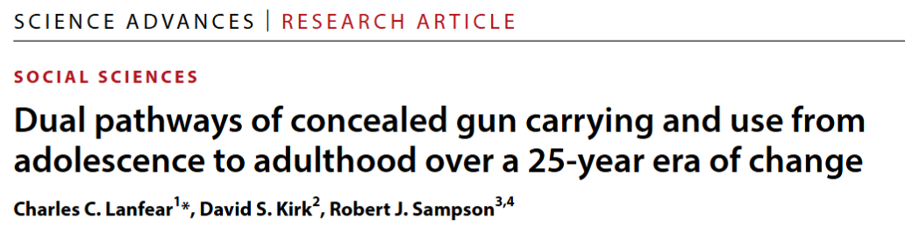
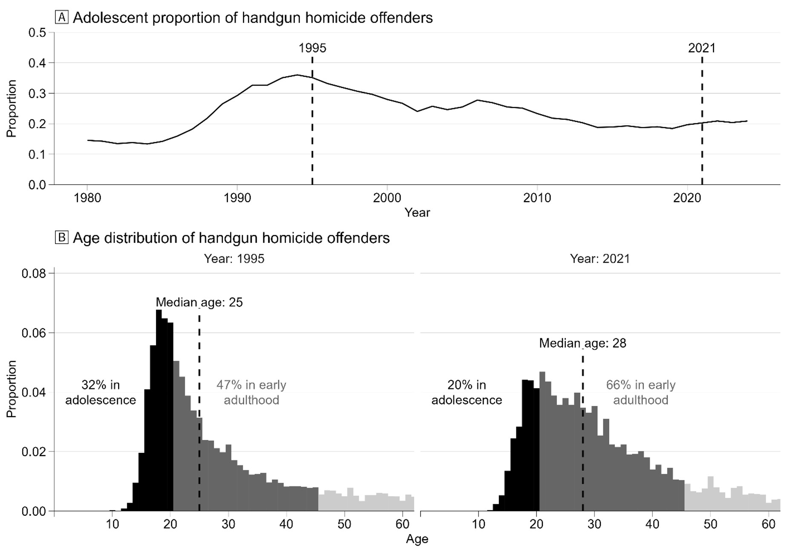
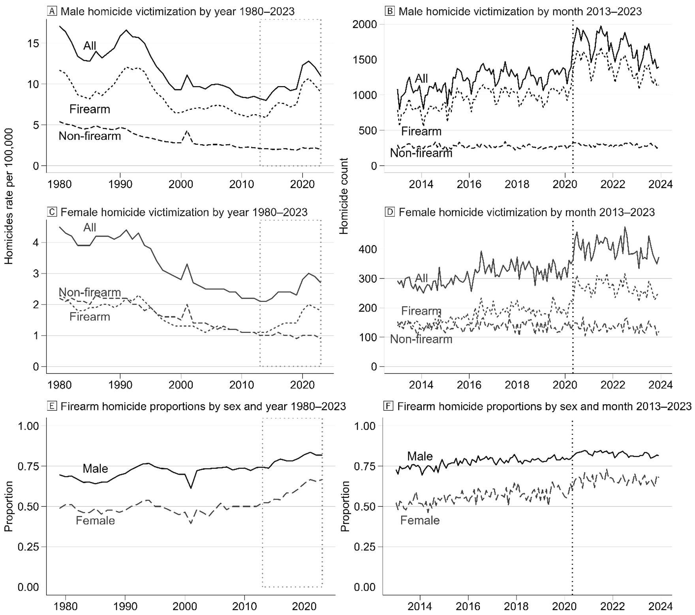
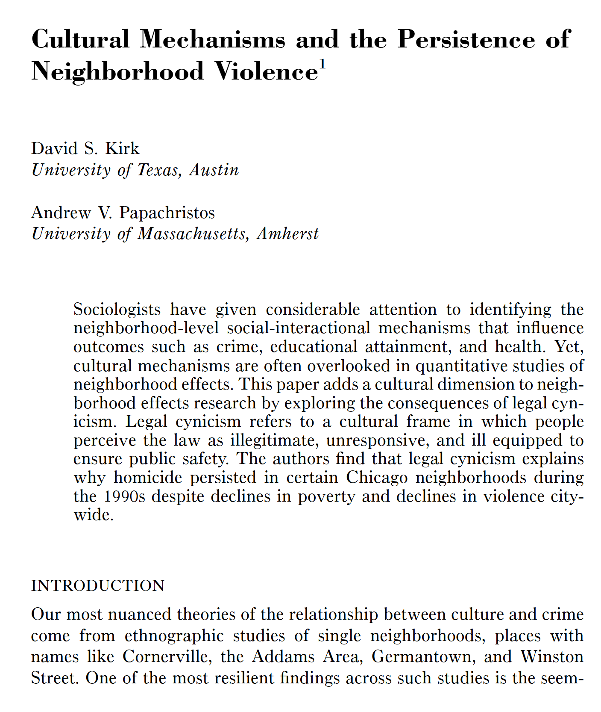
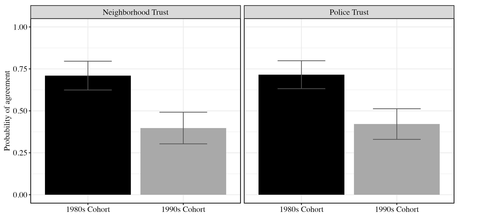
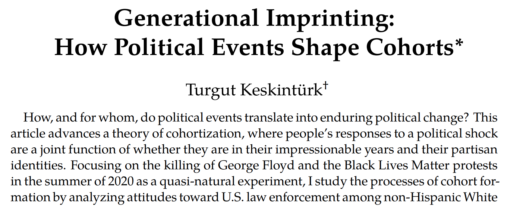

| Charles C. Lanfear | University of Cambridge |
Funded by:


Adolescent-onset
Adult-onset
How do these dual pathways of carrying relate to macro-level changes in gun violence 1980–2024?


Early 1990s
2016-2021
Both: Legal cynicism and distrust
a cultural frame in which people perceive the law as illegitimate, unresponsive, and ill equipped to ensure public safety.
when calling the police is not a viable option to remedy one’s problems—individuals may instead resolve their grievances by their own means

The inclination to violence springs from the circumstances of life… The code of the street is actually a cultural adaptation to a profound lack of faith in the police and the judicial system
Guns also:
Concentrated disadvantage → alienation from institutions
… two racially differentiated beliefs promote legal gun carrying: The belief common among most carriers that police are inadequate protectors—and thus one may carry a gun as protection from crime—and the belief more common among non-white carriers that police are coercive violators of rights—and thus one may carry a gun as protection from and resistance to the oppressive state (Lanfear et al. 2024)
Linked to diffuse social and economic insecurities

Despite having much higher arrest rates, the cohort born in 1987 has greater levels of trust in police and neighbors at age twenty-five than counterparts born just nine years later, adjusting for background factors and early-life conditions (Sampson 2026)
legal cynicism promotes concealed gun carrying as a response to perceived threats.
legal cynicism in the 1990s was primarily a neighborhood phenomenon because the factors producing it were local to neighborhoods; in contrast… legal cynicism of the mid-2010s onward is rooted in macrosocial changes…
These changes were shaped by a structural legal context forged in distinctly American gun culture.
2021 was not a reprise of the 1990s; both were the result of differential activation of processes responding to macrosocial context
But today…
How do we build trust and legitimacy and fight cynicism when most information no longer comes from personal experience, close ties, or neighborhoods?

Contact:
Charles C. Lanfear
Institute of Criminology
University of Cambridge
cl948@cam.ac.uk
For more about the PHDCN+:
PHDCN@fas.harvard.edu
https://sites.harvard.edu/phdcn/
https://doi.org/10.1007/s40865-022-00203-0